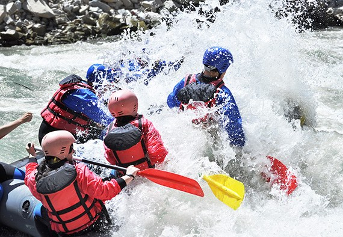
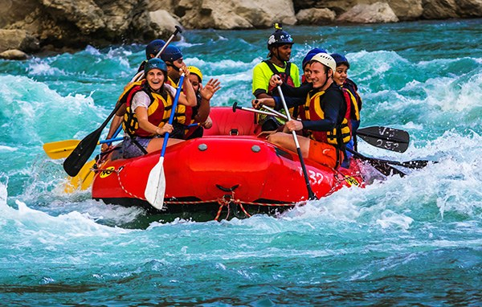
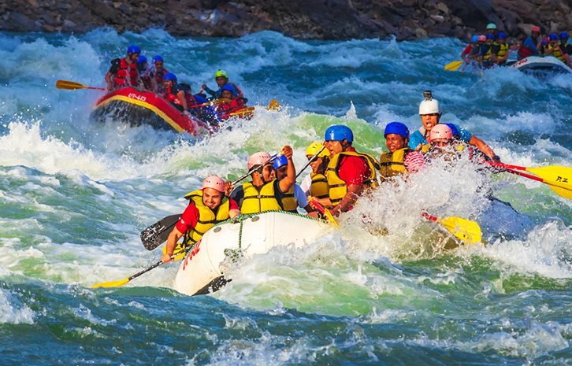
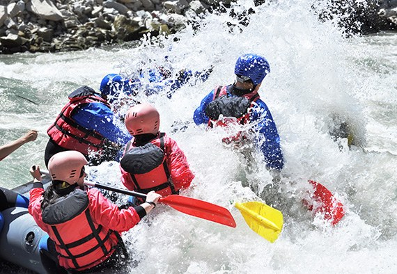
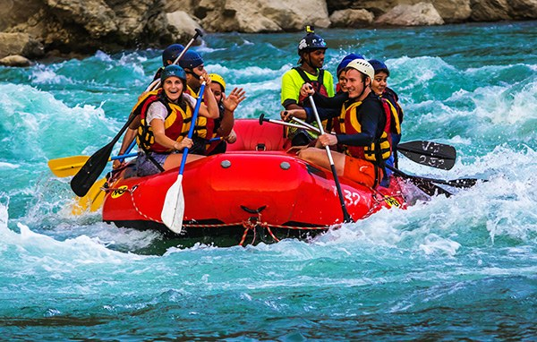
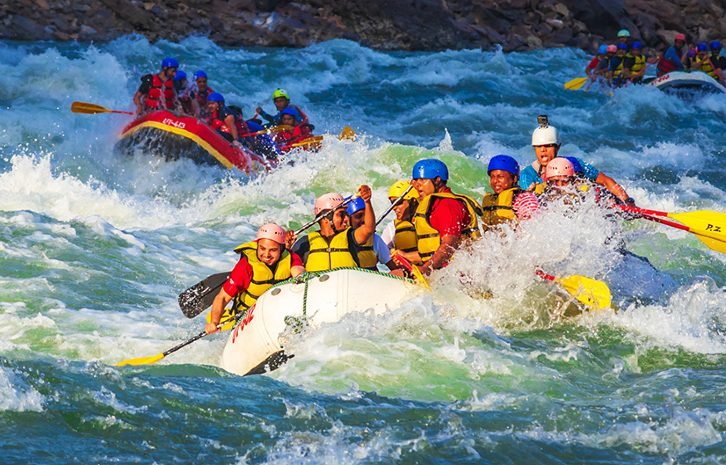

"Seize the Rapids, Sip the Splash"
"Seize the Rapids, Sip the Splash"
"Established in 2025. Riding the White Water Rapids Rafting Adventure was founded by Spring Schipper with a vision to give people the wild experience of exploring nature around them."
 




